楽歌の城攻め見聞録 第1話
川越城の遺構を半日で歩く
— 現存する本丸御殿と、深さ7mの空堀
川越と聞いて思い浮かぶのは、蔵造りの街並みと芋スイーツ。たぶん、それで合っています。
でもこの街には、徳川家康が「ここだけは絶対に落とされてはいけない」と考えたお城が、いまも遺構として残っているんです。しかも、半日あればぐるっと回れてしまう距離に。
というわけで、朝9時の開館に合わせて出発してきました。お城から始めて、小江戸の街へ降りていく順番です。歩いてみたら、この順番がなかなか気持ちよかったので、所要時間まるごとお届けします。
この記事でわかること読了 約10分
- 川越城にいまも残っている遺構と、それぞれの見どころ
- 本丸御殿から各スポットまでの実際に歩いた時間と、半日ルートの組み立て方
- 混雑を避けられる時間帯と、かかるお金
今回の旅行ルートと所要時間
| 区間 | 徒歩 | 滞在の目安 |
|---|---|---|
| 本丸御殿 | — | 約60分 |
| 本丸御殿 → 中ノ門堀跡 | 4〜5分 | 約30分 |
| 中ノ門堀跡 → 菓子屋横丁 | 約20分 | 約20分 |
| 菓子屋横丁 → 抹茶あらた | 約5分 | 約25分 |
| 菓子屋横丁 → 時の鐘 | 5〜10分 | 約20分 |
ぜんぶで4時間ちょっと。9時に歩き出して、13時前にはひと回りできました。かかるお金は本丸御殿の100円と、あとは食べた分だけです。移動はすべて徒歩で足ります。
行くなら月曜日は避けましょう
本ルートでは、月曜定休・休館の箇所が多いです。中ノ門堀跡にも公開時間（9:00〜17:00）があるので、曜日と時間だけ先に確認しておくと安心です。
川越城って、どんなお城？
まずは地図を眺めてみてください。川越城が建っているのは、武蔵野台地のいちばん北の端 ── 東に荒川、北に入間川。つまり、川と湿地が勝手に堀の役目を果たしてくれる場所なんですね。
だから戦国時代、ここは関東の覇権を左右する要衝になりました。江戸時代には「江戸の北の守り」を任されます。
面白いのは、ガチガチの軍事拠点でありながら、同時にとても賑やかな経済都市でもあったこと。大きな川に囲まれていて、しかも軍事拠点だから治安がいい。ということは、川を使った水運と商売が安心してできる、ということです。「江戸の台所」と呼ばれるまでになりました。
ちなみにこのお城、別名がふたつあります。初雁城（はつかりじょう）と霧隠城（きりがくれじょう）。霧隠城のほうの由来は、記事の後半でご紹介します。かなりロマンのある話です。
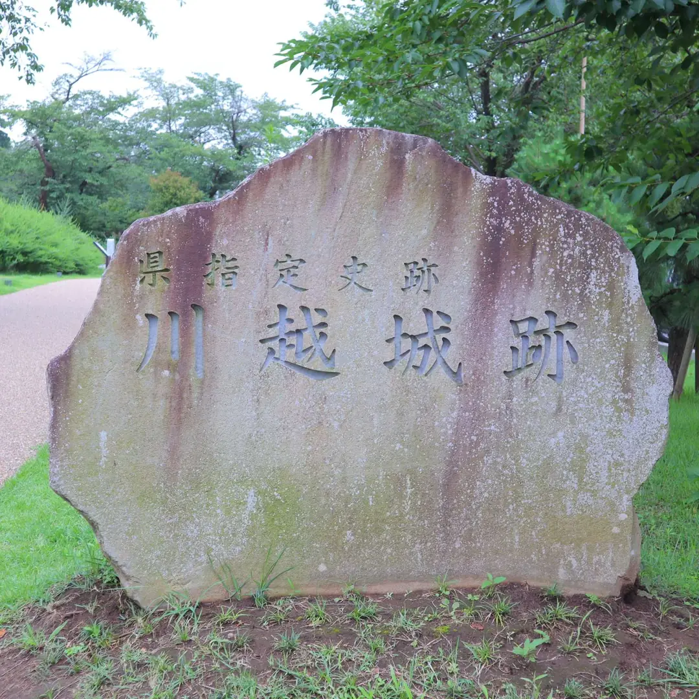
いまも残っている遺構
| 遺構 | いまの姿 |
|---|---|
| 本丸御殿 | 玄関部分が現存、家老詰所は移築復元。公開中 |
| 中ノ門堀跡 | 2008〜2009年度に復元整備。公開中 |
| 富士見櫓跡 | 跡地として木々の生い茂る高台が残る |
| 霧吹きの井戸 | 川越市立博物館の前庭に移築され現存 |
遺構① 本丸御殿 — 全国に2つだけの現存御殿

入口で靴を脱いで上がります。この瞬間、毎回ちょっと変な緊張感があるんですよね。江戸時代の家臣もここで履物を脱いで、心の準備をしたのかな、なんて。
この御殿ができたのは嘉永元年（1848年）。川越藩主・松平斉典（まつだいら なりつね）による造営です。
ここはきちんと書いておきますね。いま公開されているのは、現存している玄関部分と、移築して復元された家老詰所です。 御殿まるごとが残っているわけではありません。面積でいうと、かつての敷地のおよそ8分の1、建坪なら6分の1ほどだそうです。
それでも、本丸御殿が残っているお城は全国にふたつだけ。もうひとつは高知城の「懐徳館」で、あちらは御殿全体が現存しています。つまり川越城は、東日本で唯一ということになります。そう考えると、この100円はなかなかの破格です。
家老詰所 — 江戸時代の役員会議室
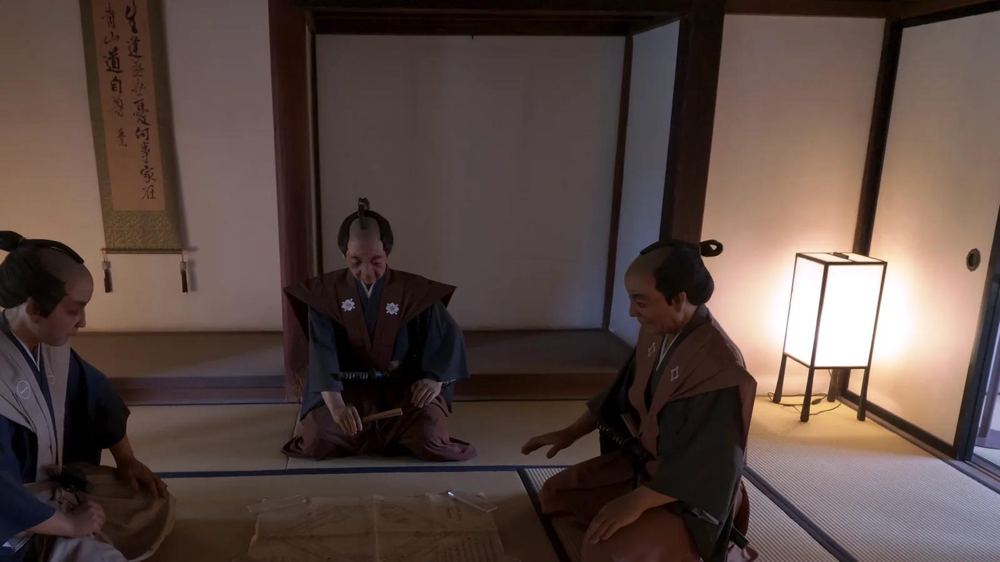
川越藩の家老が政務を執っていた部屋です。会社でいえば、幹部役員の会議室にあたるでしょうか。
ではお殿様は何をしていたのかというと、江戸時代には参勤交代がありますから、藩にいない期間のほうが長いんですね。だから政治は、主に家老たちが動かしていました。
それにしても、この部屋の狭さ。ここで藩ひとつぶんの政治を回していたと思うと、ちょっと不思議な気持ちになります。飛行機も電話もない時代に。
中庭 — 地面の瓦が教えてくれること
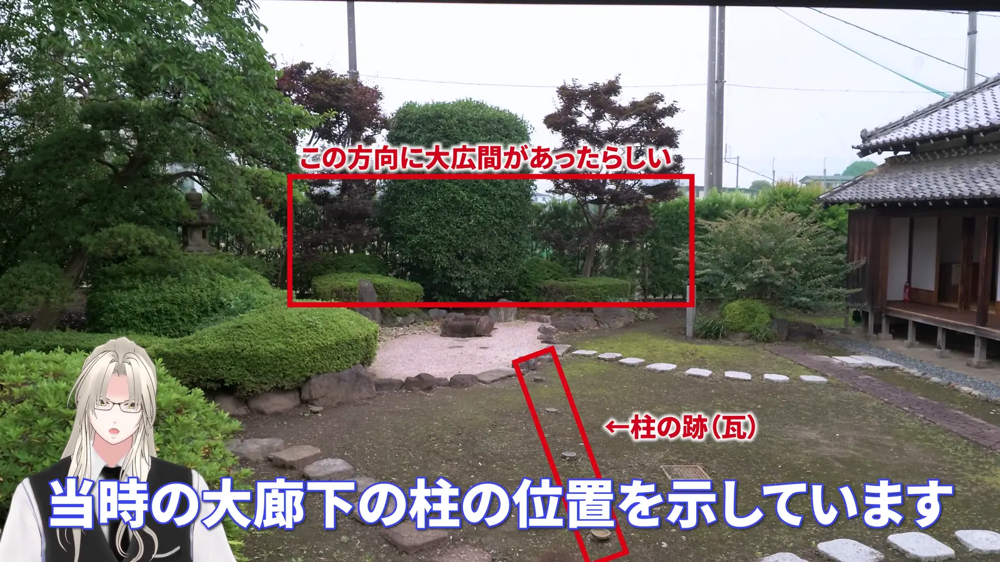
いま中庭になっているこの場所、じつはかつては大廊下でした。その先に大広間があったそうです。
で、庭にぽつぽつと埋め込まれた瓦。これが当時の柱の位置を示しています。建物がなくなった場所を、地面の印だけで読ませる。この展示、地味ですがとても好きです。
大広間 — 天下三名槍「御手杵」に会える
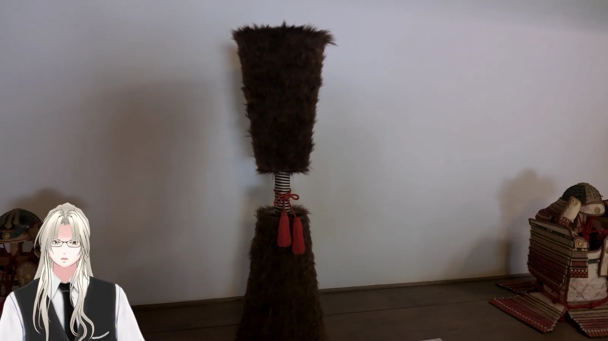
大広間には甲冑と、天下三名槍のひとつ「御手杵（おてぎね）」のレプリカが展示されています。もふもふした鞘が、思った以上に大きい。
この槍、もとは下総結城の大名・結城晴朝が作らせたもので、養嗣子であり徳川家康の実子でもある結城秀康に伝わりました。そこから受け継いだのが松平大和守家 ── 川越藩主をつとめた家です。
ただ、本物はもう残っていません。1945年の東京大空襲で、東京・大久保の松平邸の所蔵庫が焼夷弾の直撃を受け、焼失してしまいました。戦火を避けて埋めておくよう命じられていたのに、「お家の宝にそんな扱いはできない」と家臣たちが従わなかったのだそうです。その判断が、結果として仇になりました。
名前の由来は鞘のかたち。中央のくぼんだ持ち手と、ふくらんだ両端が、餅つきの「手杵」に似ているから。言われてみれば、たしかに。
あと、ぜひ天井の梁も見上げてみてください。釘を一本も使わず、木と木が噛み合っています。地震の揺れを、この噛み合いで逃がすんだそうです。日本建築、何百年も前からちゃんとエンジニアリングしてるんですよね。
DATA — 川越城本丸御殿
- 住所
- 埼玉県川越市郭町2-13-1
- 開館
- 9:00〜17:00（入館は16:30まで）
- 休館
- 毎週月曜（祝日の場合は翌日）／第4金曜（祝日を除く）／12月29日〜1月3日
- 入館料
- 一般100円 ／ 高校・大学生50円 ／ 中学生以下無料 ／ 障害者手帳等をお持ちの方と介護者は無料
- 駐車場
- 隣接する美術館の北側に約20台（障害者用8台）。初雁公園の整備にともない台数が減っているため、公共交通機関の利用が案内されています
※ 川越市公式サイトの情報です。お出かけ前に最新情報をご確認ください。
遺構② 中ノ門堀跡 — 深さ7m、登る気が失せる空堀
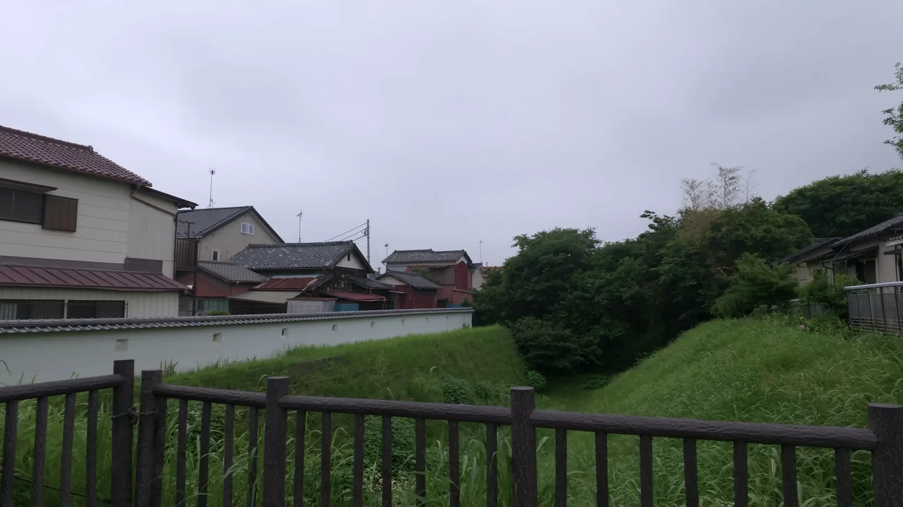
本丸御殿から徒歩4〜5分。着いてみると、あたりはすっかり住宅街です。
でも江戸時代までは、ここまでぜんぶお城の敷地でした。そう思って改めて眺めると、なかなかクラっときます。
中ノ門堀跡は、深さ約7メートル、幅約18メートルの空堀。水を張らない、掘り抜いただけの堀です。底から見上げると、ビルの2〜3階分くらいの高さがあります。
ここで効いてくるのが、斜面の角度なんですね。攻める側は、重たい甲冑を着て武器を持ったまま、この斜面をよじ登らないといけません。梯子は当然かけてもらえないし、上からは矢が飛んでくる。水堀なら泳ぐという手もありますが、空堀にはそれもない。ただ、登るしかない。……考えただけで、ちょっと無理です。
しかもこの勾配、目分量で作られたものではありません。 川越市が発掘調査にもとづいて当時の角度を復元しているんです。いま目の前にある傾きが、江戸時代に「敵を止めるため」に計算された傾きそのもの、ということになります。
整備されたのは平成20〜21年度（2008〜2009年度）。堀そのものの復元に加えて、説明板とベンチのある見学広場、土塀、冠木門まで用意されています。歩きやすくて、堀のかたちがひと目でわかる。正直なところ、私は本丸御殿よりこちらのほうが「お城に来たなあ」と感じました。
歴史メモ — 河越夜戦との関係
川越城を舞台にした有名な合戦に、1546年（天文15年）4月の河越夜戦があります。日本三大夜戦のひとつに数えられ、8万の連合軍に包囲されたお城を、北条氏康の救援軍が撃退したと伝わる戦いです。
ただ、ひとつ注意を。この中ノ門堀が造られたのは江戸時代になってからで、河越夜戦の当時にはまだありませんでした。堀を眺めながら夜戦を想像すると、時代がずれてしまいます。兵力の数字も伝承の色が濃く、史料によって差がありますので、倍率はあまり真に受けないほうがよさそうです。
訂正 — 動画内の数値について
この記事のもとになっている動画では、中ノ門堀の規模を「深さ約6メートル、幅約30メートル」とご説明していますが、誤りでした。正しくは深さ約7メートル、幅約18メートルです。お詫びして訂正します。
DATA — 川越城中ノ門堀跡
- 住所
- 埼玉県川越市郭町1-8-6（本丸御殿から徒歩4〜5分）
- 公開
- 9:00〜17:00 ／ 12月29日〜1月3日は閉園 ／ 無料
- ひとこと
- 常時開放ではないので、夕方以降は入れません
※ 川越市公式サイトの情報です。お出かけ前に最新情報をご確認ください。
今回は行けなかった場所
正直に白状します。半日ルートでは、この3か所に行けませんでした。時間に余裕があれば、ぜひ足を延ばしてみてください。
霧吹きの井戸 — 「霧隠城」の由来はここに
敵が攻めてきたときに蓋を開けると、中から霧がもうもうと立ち込めて、お城ごと霧の中に消えてしまう ── そんな伝承が残る井戸です。川越城が霧隠城と呼ばれるのは、この話が理由。ロマンがすごい。
でもこれ、ただの怪談として片付けるのは、ちょっともったいない気がするんです。川越は入間川と荒川に挟まれた低地で、早朝には本当に濃い霧が出る土地なんですね。それを「城を守る霧」として物語に組み込んだのだとしたら ── 地理と民話が溶け合った、なかなか贅沢な話になります。
井戸は川越市立博物館の前庭に移築され、現存しています。本丸御殿のすぐ向かいなので、立ち寄るのは簡単です。……私は御殿ですっかり満足してしまい、見事に忘れました。真相は、みなさんの目で確かめてください。
三芳野神社 — 童謡「とおりゃんせ」発祥の地
住所は川越市郭町2-25-11。本丸御殿と同じ郭町2丁目で、目と鼻の先です。
かつて川越城内にあった神社で、童謡「とおりゃんせ」発祥の地といわれています。 お城の中にあったものですから、庶民は自由にお参りできず、出入りが厳しく管理されていました。「行きはよいよい 帰りはこわい」は、その状況を歌ったものだと伝えられています。
創建は古く、寛永元年（1624年）にのちの城主・酒井忠勝が川越城の鎮守として再建したといわれます。社殿は埼玉県指定文化財です。
富士見櫓跡
川越市郭町2、県立川越高校の南側にあります。
天守を持たなかった川越城が、物見のために櫓を建てていた場所です。建物はありませんが、跡地として木々の生い茂る高台が残っています。中腹には川越城址碑、北側には御嶽神社。前面道路が狭くて近くに小学校もあるので、お車の方は通行にご注意を。
お城のあとは、小江戸で寄り道
歴史パートはここまで。お疲れさまでした、脳みそに。ここからは、お城を回ったあとに寄れるお店です。
4軒とも元町2丁目、菓子屋横丁のまわりにかたまっています。 中ノ門堀跡から横丁まで歩いてしまえば、あとはほとんど移動なしで回れます。ありがたい。
川越ベーカリー楽楽 — みそパンが主役
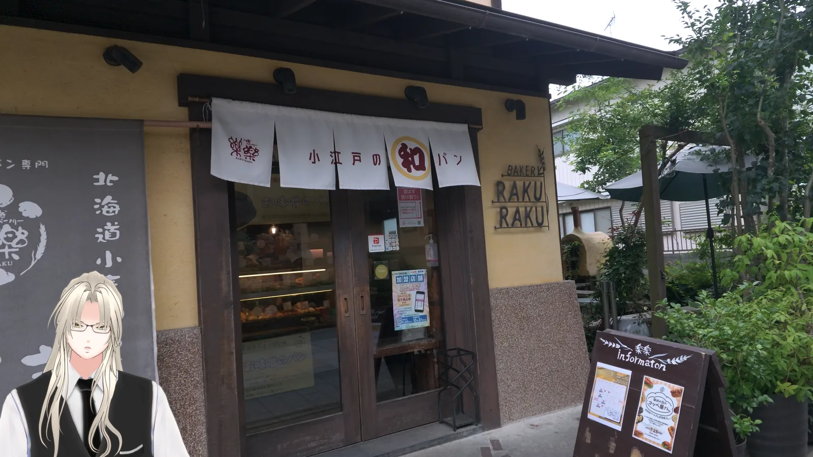
名物は「みそパン」。このルートでひとつだけ食べるものを選べと言われたら、迷わずこれです。
ただし、ひとつだけ注意を。パンが売り切れ次第、閉店します。 夕方に行って買えるとはかぎりません。午前中をおすすめする理由が、混雑のほかにもうひとつあるというわけです。
DATA — 川越ベーカリー楽楽
- 住所
- 埼玉県川越市元町2-10-13（菓子屋横丁内）
- 営業
- 9:30〜17:00頃 ※パンが売り切れ次第 閉店
- 定休
- 月曜（月曜が祝日の場合は翌日）／臨時休業あり
※ 取材時点の情報です。お出かけ前に最新情報をご確認ください。
元町珈琲店ちもと — 芋ソフトでひと息
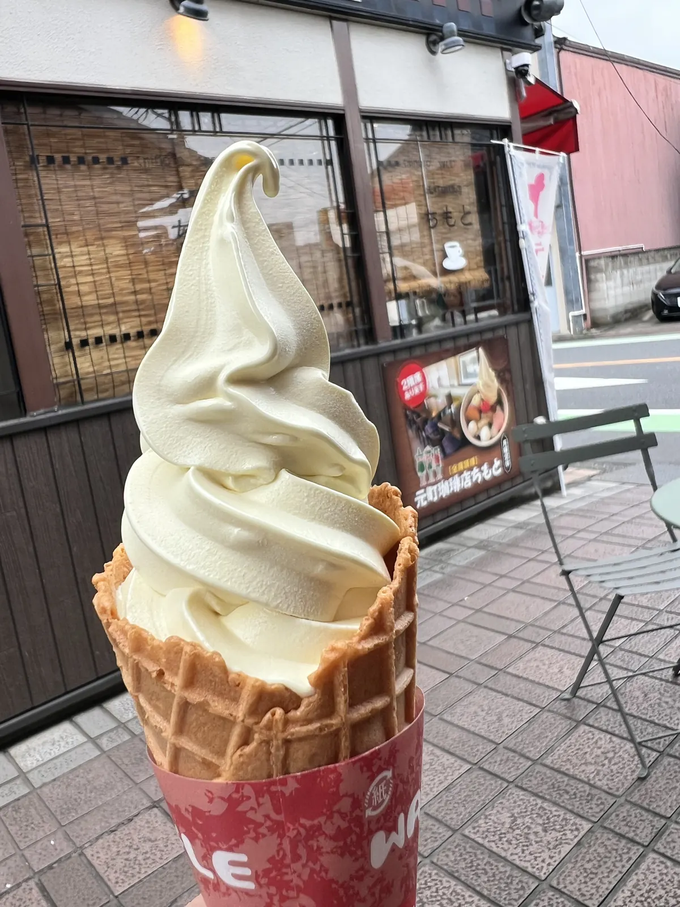
自家焙煎の珈琲と芋ソフトのお店です。歩きどおしの脚に、この甘さはよく効きます。さつまいもの甘さって、なんだか優しいんですよね。
ところで、川越のさつまいもが有名になったのには、ちゃんと地理的な理由があります。川越の土は関東ローム層の火山灰土壌で、水はけがいい ── さつまいもの栽培にぴったりなんです。
そしてその芋を江戸へ運んだのが、新河岸川の舟運でした。川越五河岸（扇・上新河岸・牛子・下新河岸・寺尾）から、米・さつまいも・材木・素麺が江戸へ。帰りの舟には、江戸から調度品・小間物・砂糖・お酒が積まれてきます。江戸後期から明治中期にかけて栄え、鉄道が通ると役目を終えました。
行きも帰りも荷がある。だから川越は「江戸の台所」になれたわけです。いま食べている芋ソフトも、その延長線上にあると思うと、ちょっと味わい深い。
DATA — 元町珈琲店ちもと
- 住所
- 〒350-0062 埼玉県川越市元町2-3-12
- 電話
- 049-226-6969
- 営業
- 11:00〜17:30
- 定休
- 月曜（祝日は営業）
※ 公式サイトの情報です。お出かけ前に最新情報をご確認ください。
菓子屋横丁 — 石畳をぶらぶらと
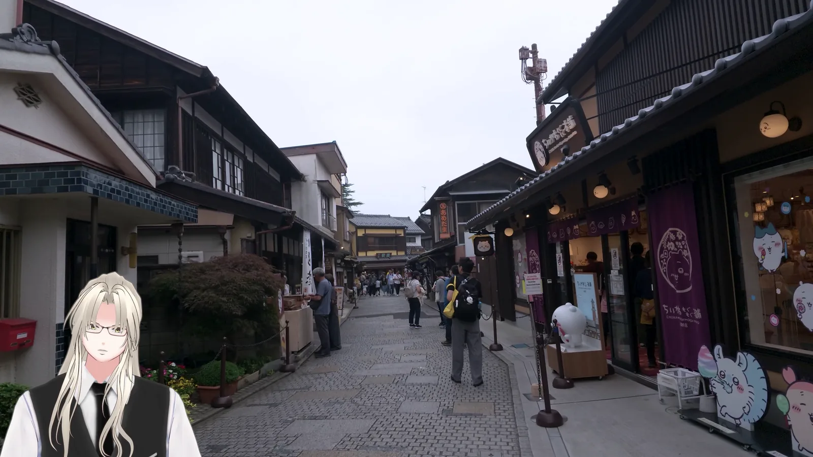
石畳と蔵造りの街並みを、あてもなく歩きます。午前中は人が少なくて、かなり快適でした。この日は天気がいまひとつでしたが、かえって歩きやすかったかもしれません。
DATA — 菓子屋横丁
- 住所
- 埼玉県川越市元町2丁目
- 営業
- お店によって異なります（10時台から開くところが多いようです）
抹茶あらた — 幻の河越茶とは
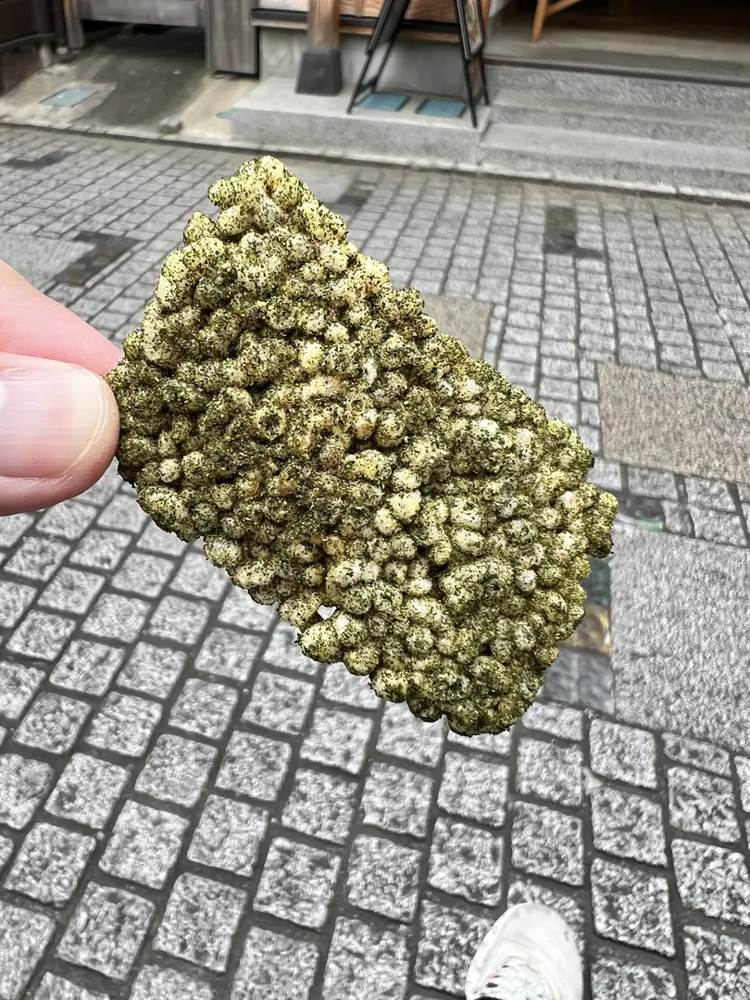
ほうじ茶と、煎茶塩でいただくおこげ揚餅。これがなかなか手が止まりません。
ところで、川越がお茶の産地だったことはご存じでしょうか。
南北朝時代の『異制庭訓往来』『新撰遊覚往来』といった当時の教本に、武蔵国の銘茶として「河越茶」の名前が登場します。作られていたのは星野山無量寿寺 ── いまの喜多院にあたる天台宗の大寺院で、当時は学問の中心地でもありました。お茶と学問がセットというのが、なんとも中世らしい。
ところがこの河越茶、戦国時代の混乱とともに姿を消してしまいます。のちに狭山茶として蘇る流れがありますが、その源流にあたるのが河越茶なんですね。現在の「河越抹茶」は、2019年4月26日にNPO法人河越抹茶の会が地域団体商標として登録しています。
お城も、お茶も。川越って、一度消えてまた現れるものが多い街なんです。霧の中に隠れて、また姿を見せるお城の名前と、どこか重なる気がしませんか。
DATA — 抹茶あらた
- 住所
- 〒350-0062 埼玉県川越市元町2-9-19（菓子屋横丁内）
- 電話
- 049-298-7500
- 営業
- 平日 10:00〜16:00 ／ 土日祝 10:00〜17:00
- 定休
- 不定休
※ 公式サイトの情報です。お出かけ前に最新情報をご確認ください。
川越氷川神社 — 風鈴の下をくぐる
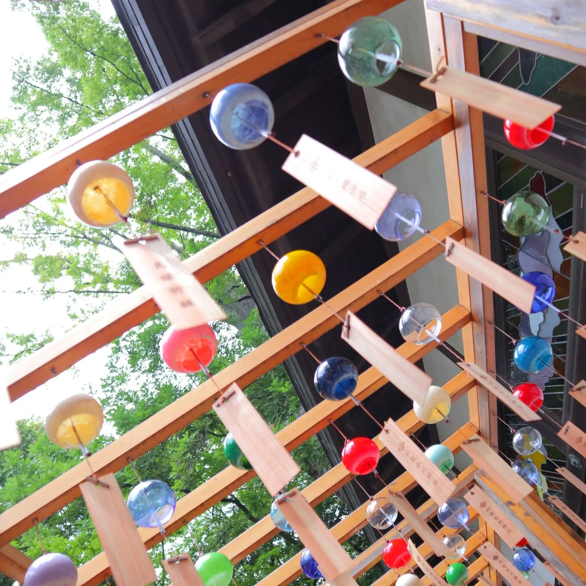
次はどこへ行こうかとふらふら歩いていたら、氷川神社で「縁むすび風鈴」をやっていると聞いて寄り道しました。境内には約2,000個の江戸風鈴。この風鈴の下をくぐる道が、とにかく風流なんです。
ただ、お昼を回るとかなりの人出になります。みんな、縁を結びたいんですね。
DATA — 川越氷川神社
- 住所
- 埼玉県川越市宮下町2-11-3
- 電話
- 049-224-0589
- 縁むすび風鈴
- 2026年は6月27日〜9月6日の開催でした
※ 開催期間は年によって変わります。お出かけ前に公式サイトでご確認ください。
時の鐘 — いまも1日4回鳴ります
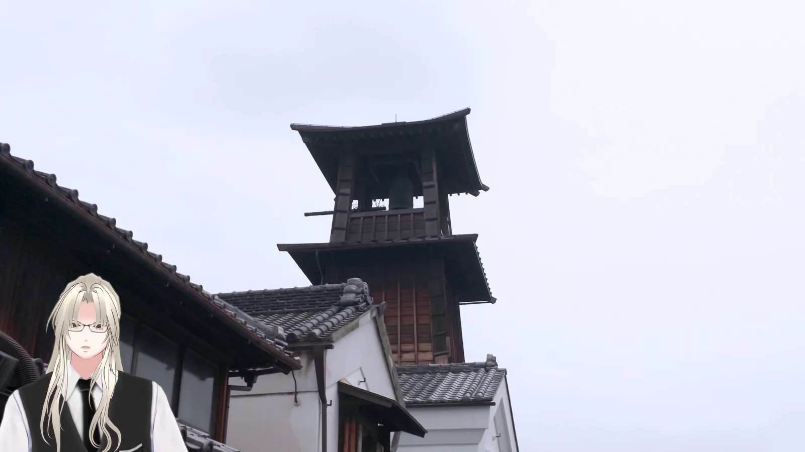
創建は寛永年間（1624〜1644年）、酒井忠勝によるものと伝わります。
いま立っているのは4代目。明治26年（1893年）の川越大火で焼けてしまい、その翌年に再建されたものです。3重4階建で、総高さは約17.5メートル。昭和33年には市の指定有形文化財になりました。
そして嬉しいことに、鐘はいまも1日4回鳴ります。午前6時、正午、午後3時、午後6時。 時間を合わせて行けば、音まで込みで楽しめます。せっかくなら、狙って行きたいところです。
DATA — 時の鐘
- 住所
- 〒350-0063 埼玉県川越市幸町15-7（菓子屋横丁から徒歩5分）
- 見学
- 外観は常時見学可
- 鐘
- 1日4回 — 6:00 / 12:00 / 15:00 / 18:00
※ 取材時点の情報です。お出かけ前に最新情報をご確認ください。
このルートを楽しむコツ
- 月曜は避ける。 本丸御殿が休館で、楽楽もちもともお休みです。本丸御殿は第4金曜も休館なので、そこだけご注意を。
- 9時の開館に合わせる。 開館時間ぴったりに着けば、待ち時間ゼロ。お城を午前に片付けてしまうと、そのあとがぐっと楽になります。
- 午前にお城、お昼から街。 菓子屋横丁も氷川神社も、昼を回ると一気に人が増えます。逆に午前中は驚くほど空いています。楽楽のみそパンが売り切れる前に着く、という意味でも午前が有利です。
- お店の開店時刻もチェック。 楽楽が9:30、抹茶あらたが10:00、元町珈琲店ちもとが11:00。お城を9時から回れば、ちょうどいい時間に街へ降りられます。
- 公共交通機関がおすすめ。 本丸御殿の駐車場は約20台で、初雁公園の整備にともなって減少中です。川越市も公共交通機関の利用を案内しています。
おわりに
地形があって、川がある。だから堀ができて、お城ができました。
お城があるから街ができて、街があるから舟運ができて、舟運があるから文化が積み重なった。芋も、お茶も、霧吹きの井戸の伝承も、ぜんぶその積み重なりの上に乗っています。
「小江戸」という呼び名は、結果であって始まりではないんですね。朝9時に本丸御殿の門をくぐると、その順番のほうから街が見えてきます。
歴史好きにはたまらない遺構がたっぷりの川越城、ぜひ行ってみてください。次回は、同じ埼玉のまったく違うお城へ。水に浮かぶ、難攻不落の城です。